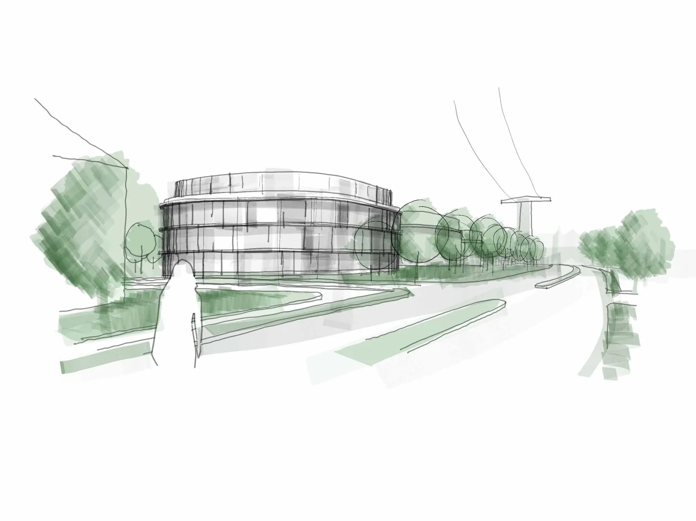
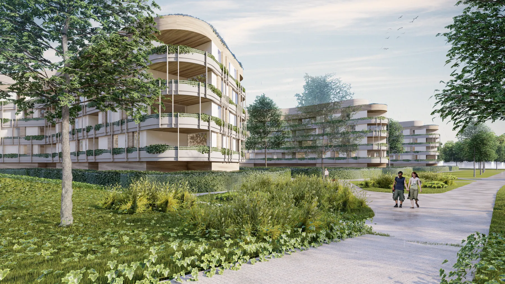

Das Carl-Meinelt-Viertel: Entwicklung eines 17.400 m² großen Areals an der Carl-Meinelt-Straße im Osten der …
Carl-Meinelt-Viertel, Bamberg
Das Carl-Meinelt-Viertel: Entwicklung eines 17.400 m² großen Areals an der Carl-Meinelt-Straße im Osten der Stadt, in Auftrag der Sparkasse Bamberg.
Das Carl-Meinelt-Viertel: Entwicklung eines 17.400 m² großen Areals an der Carl-Meinelt-Straße im Osten der Stadt, in Auftrag der Sparkasse Bamberg. Aktuell befindet sich hier bereits das Planungs- und Steuerungszentrum der Sparkasse. Perspektivisch ist allerdings eine umfangreiche Weiterentwicklung des Areals zu einem urbanen, mischgenutzten Quartier mit unterschiedlichen Nutzungsformen wie Wohnen, Arbeiten und auch soziale Einrichtungen, wie z.B. eine Kindertagesstätte geplant.
Neues Stadtviertel in Bamberg: Das Carl-Meinelt-Viertel
Der Schwerpunkt der städtebaulichen und architektonischen Aufgabenstellung für Brückner Architekten liegt auf Aspekten der Nachhaltigkeit und des energieeffizienten Bauens. Eine Auswahl von drei städtebaulichen Studien aus unserer Design Unit wurde bereits dem Gestaltungsbeirat der Stadt vorgestellt und stießen dort auf sehr viel Interesse.
Competition
Urbanes Flair:
Zukunftsvision für Bamberg entsteht
Ziel der Sparkasse Bamberg ist es, die aktuell noch ungenutzten Flächen um das Bestandsgebäude in ein zukunftsweisendes, urbanes und mischgenutztes Quartier zu transformieren. Inhaltlich sollen hier die Nutzungsformen Wohnen, Arbeiten und auch soziale Einrichtungen, wie z.B. eine Kindertagesstätte, unter den Aspekten der Nachhaltigkeit und energieeffizienten Bauens die Basis für diese anspruchsvolle Entwicklung bilden. Für die planerische Umsetzung der städtebaulichen und architektonischen Aufgabenstellung wurde das renommierte Architekturbüro Brückner Architekten aus München als Partner eingebunden. In enger und regelmäßiger Abstimmung mit dem Baureferat der Stadt Bamberg und dem zuständigen Gestaltungsbeirat soll die Projektentwicklung nunmehr zügig voranschreiten.
Aufbruch in Bamberg: Neues Stadtquartier in Planung

Auftraggeber: Sparkasse Bamberg
Nutzung: urbanen, mischgenutzten Quartier mit unterschiedlichen Nutzungsformen wie Wohnen, Arbeiten und auch soziale Einrichtungen, wie z.B. eine Kindertagesstätte geplant.
Wir haben IhrInteresse geweckt?
Sie haben Fragen oder wollen einen Termin vereinbaren?